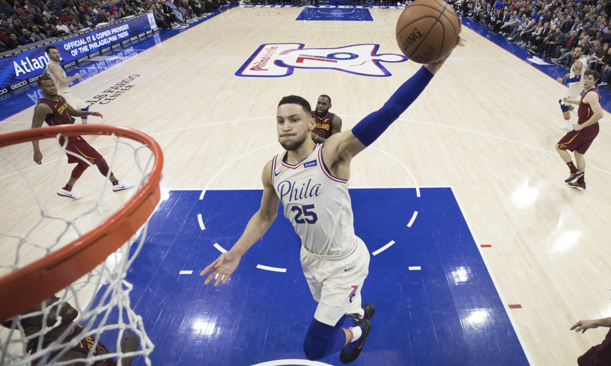
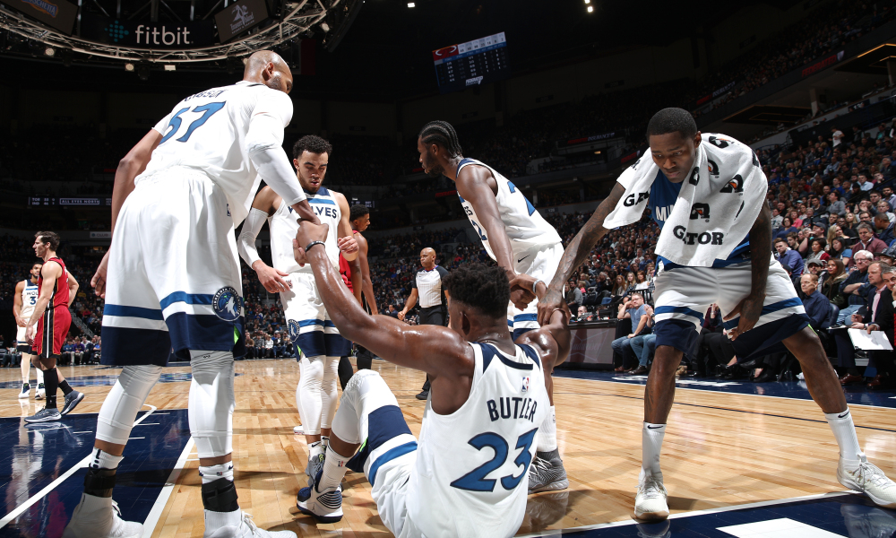
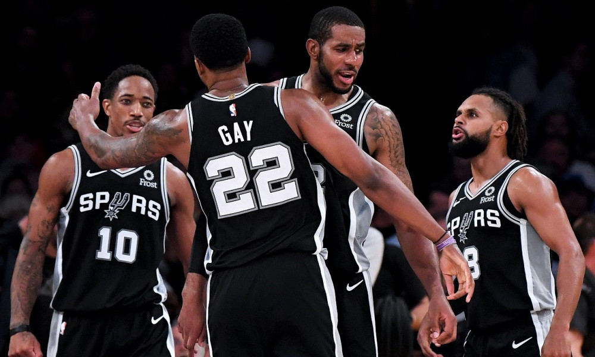

Game 1: Portland Trail Blazers vs Indiana Pacers
My Pick:
Indiana Pacers
Why I'm Rolling with them:
Damian Lillard went on a tear during Saturday's game against the Heat, putting up 42 points, 7 rebounds, and 6 assists. C.J. McCollum chipped in 19/7 as well. The rest of the team combined for 50 points. Remove bench center Zach Collins, and that number drops to 37 points. Portland's bench has been improved compared to last season, however the Indiana Pacers currently have one of the best benches in the league, including Domantis Sabonis, who is currently the only bench player in the league averaging a double-double. Oladipo has looked just as good as last year, proving that this Pacers team is primed to strike. I see the Pacers taking it 114-105.
Game 2: Atlanta Hawks vs Philadelphia 76ers
My Pick:
Philadelphia 76ers
Why I'm Rolling with them:
On Saturday's game against the Charlotte Hornets, 6 Sixers players played more than 17 minutes. All 6 scored in double digits. That's great team basketball, and with Embiid leading the way, Philadelphia is primed to have another good season. The 76ers have the tools to be a good defensive team, and should make easy work of Atlanta's offense, which currently ranks 20th in PPG. Atlandas leading scorer is Taurean Prince, averaging 21 points on 62% True Shooting. He's already taking a way larger offensive role than last season, where he averaged 14 points on 55% True Shooting. However, tonight he'll have to contend with either Ben Simmons or Robert Covington covering him for the majority of the game, which is a tough matchup for the Hawks. Speaking of Ben Simmons, he's in a shooting slump to start the season, shooting only 18% on shots in the 3-10 foot range. That number has to improve if the Sixers want to claim a top 4 seed this season. But it'll be enough to down the Hawks, as Philadelphia wins 122-106.
 Simmons has been in a shooting slump, but is still a top-tier playerGame 3: Sacramento Kings vs Miami Heat
My Pick:
Miami Heat
Why I'm Rolling with them:
The Heat have lost 2 games by 3 points or less so far this season. Their 3-2 record is about what I expected, but they have played very good basketball so far, and are outscoring opposing teams by 6.6 points a game. Even if you remove their 110-87 dismantling of the Knicks, they're still outscoring teams by 1.5 points a game. They have had a middling offense so far, but have the 6th best defense in the league, allowing teams only 105.4 points a game. This bodes well against a Sacramento team that scores the 6th most points per game, but only has the best defense. I expect Dragic and McGruder to have good games, with this game being a true test of Sacramento's young bigs as they go up against the #2 rebounding team in the league. Miami wins it, 117-109.
Game 4: Brooklyn Nets vs New York Knicks
My Pick:
Brooklyn Nets
Why I'm Rolling with them:
Caris LeVert is tearing it up this season, averaging 21 points, 5 rebounds and 4.5 assists so far. He's primed to have a good year. On the Knicks side, Tim Hardaway is averaging 24, 3, and 3. This matchup between these wings will be crucial for these two teams tonight.
Game 5: Los Angeles Lakers vs Minnesota Timberwolves
My Pick:
Los Angeles Lakers
Why I'm Rolling with them:
Karl-Anthony Towns has had a very rough start to the season, only scoring 16 points a game on 43 pecent from the field. The Timberwolves should look to get him involved, as the Laker's lack of depth at Center has been an issue throughout their first 6 games. Speaking of Lakers Centers, McGee is having the best season of his career. In 25 minutes per game, Javale is averaging 16/7, with 3 blocks a game. Those are very good numbers, which is probably due to the Laker's abundance of playmakers. The Lakers are third in assists per game, with Rondo and Lebron both averaging over 8 assists. The Timberwolves are 18th in assists, and play a very isolation based style of play. Ingram is back for the Lakers, and should be enough to push them over the edge as they win 121-113.
 Jimmy Butler is helped up by teammatesGame 6: Golden State Warriors vs Chicago Bulls
My Pick:
Golden State Warriors
Why I'm Rolling with them:
Chicago is a one-man show, with LaVine averaging 29 points and 5 rebounds a game. The Bulls are getting outscored by 7 points a game, and look very bad. I think this Golden State defense is an extremely difficult matchup for LaVine, since they have Thompson on the perimeter, followed by Draymond and Durant protecting the rim. I'm guessing he'll only get 21 points tonight, down from his season average. Golden State has been outscoring opponents by almost 12 points a game. Durant and Curry have combined to score over 50 every game this season. Curry has not hit less than 5 threes all season. Chicago has abosolutely abysmal defense, and this high-octane Golden State team will rack up an absurd amount of points. Golden State wins easily, 132-115.
Game 7: Toronto Raptors vs Milwaukee Bucks
My Pick:
Toronto Raptors
Why I'm Rolling with them:
After Giannis caught an elbow to the back of the head in the game against the Magic, I was sure Toronto was going to take this one. Then earlier today, it was announced that Kawhi would be sitting this game out for rest. Lowry vs Middleton is exciting basketball, with both of them having maybe their best seasons of their careers. Lowry is averaging over 10(!) assists a game, and is every part the floor general. However, with VanVleet and Anunoby also out this game is a lot harder to call. Brook Lopez has been playing extremely well so far this season, and fits very nicely in the Milwaukee offense. I'll be interested to see Middleton take a bigger part of the offense tonight, as he's currently averaging 22 points on an absurd 71% TS. I'm giving the edge to the Raptors, but it's the hardest game for me to call so far this season. Raps 114-112.
Game 8: Dallas Mavericks vs San Antonio Spurs
My Pick:
San Antonio Spurs
Why I'm Rolling with them:
DeMar Derozan put on an absolute clinic against the Lakers Saturday night, putting up 30/12/8 as well as 2 steals and a block to bump his season averages up to 27 points, 6 rebounds and 8 assists. His defense this season, while not great, has been passable. He is looking very part of an All-Star in the West. I'm excited to see what he can do against Wesley Matthews who is having his worst devensive year of his career so far. Dallas has the 25th defense in the league, and a middling offense. Having Barnes back should help a little with their offense, but that still won't be enough to propel Dallas ahead of the Spurs, who take it 118-106.
 DeMar seems at home in this Spurs systemGame 9: New Orleans Pelicans vs Denver Nuggets
My Pick:
Denver Nuggets
Why I'm Rolling with them:
New Orleans has been playing at a blistering pace to start the year, averaging 125 points per game on the back of Anthony Davis. Davis also has a stellar defensive rating, and currently has a net rating of +27. Davis is also out tonight, along with starting point guard Elfrid Payton. It will be interesting to see how the Pelicans, who lost by 21 to the Jazz without Davis on Saturday, function. I don't think it's going to be pretty. Denver's defense has looked really good to start the year, even if their offense isn't quite what I had expected. Jokic putting up 23/11/6 while shooting 59/60/85 is crazy efficient, and I'm counting on him to lead the Nuggets to the win, 122-110.